A Stroll Along the South Bank
From Waterloo Station along the river to Shad Thames, across Tower Bridge, and back along the north bank to where it started. Choose a stop on the model or in the list.
Drag to turn and tip, right-drag or Shift-drag to move, scroll to zoom. The arrow keys step through the walk. Drag to turn and tip, two fingers to move and zoom. Map data © OpenStreetMap contributors. Heights of buildings and trees © Environment Agency 2022, under the Open Government Licence.
- 1 Waterloo Station
Where the walk starts. Out of the station, and follow the signs to the river.
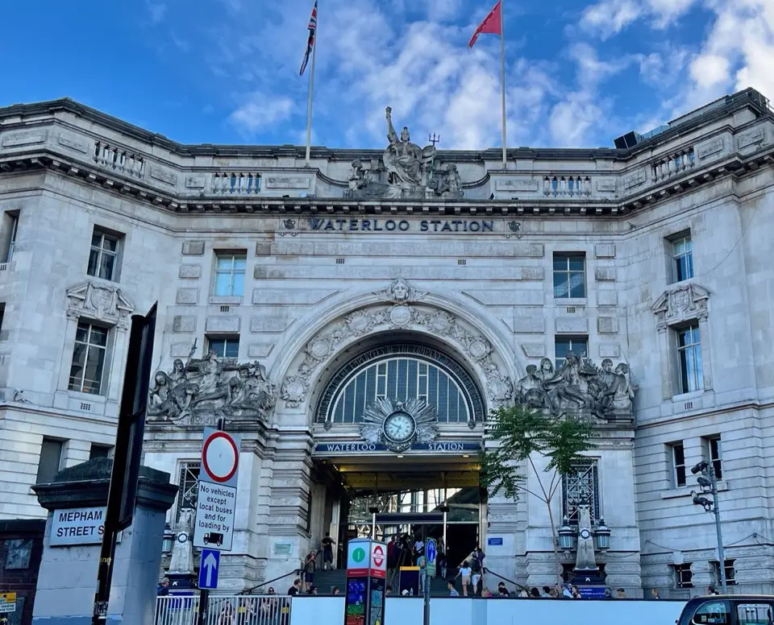
- 2 Southbank Centre
The Royal Festival Hall, from the 1951 Festival of Britain, and the skaters in the Undercroft beneath Queen Elizabeth Hall.
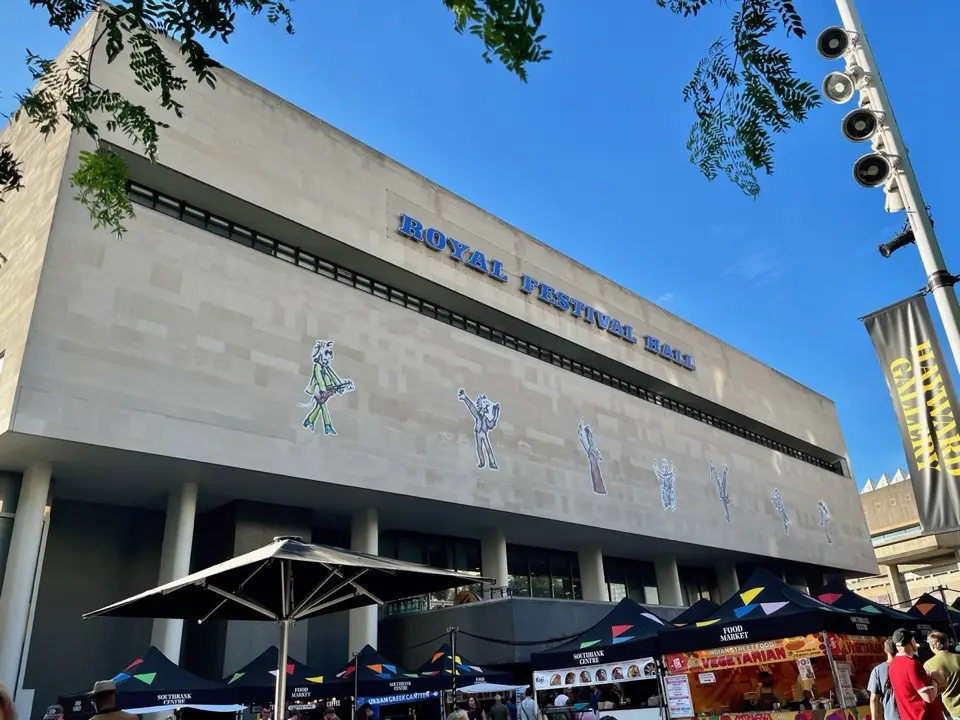
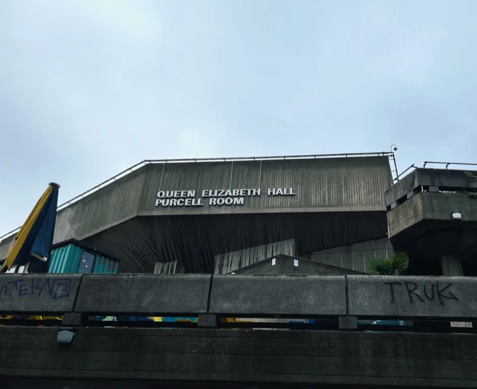
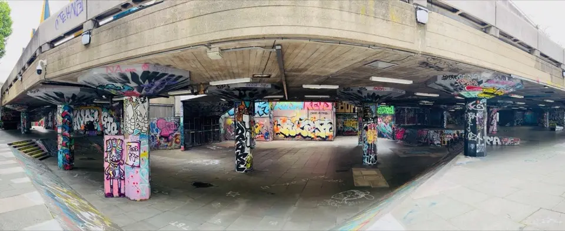
- 3 BFI Southbank
The cinema, and the second-hand book tables under Waterloo Bridge.
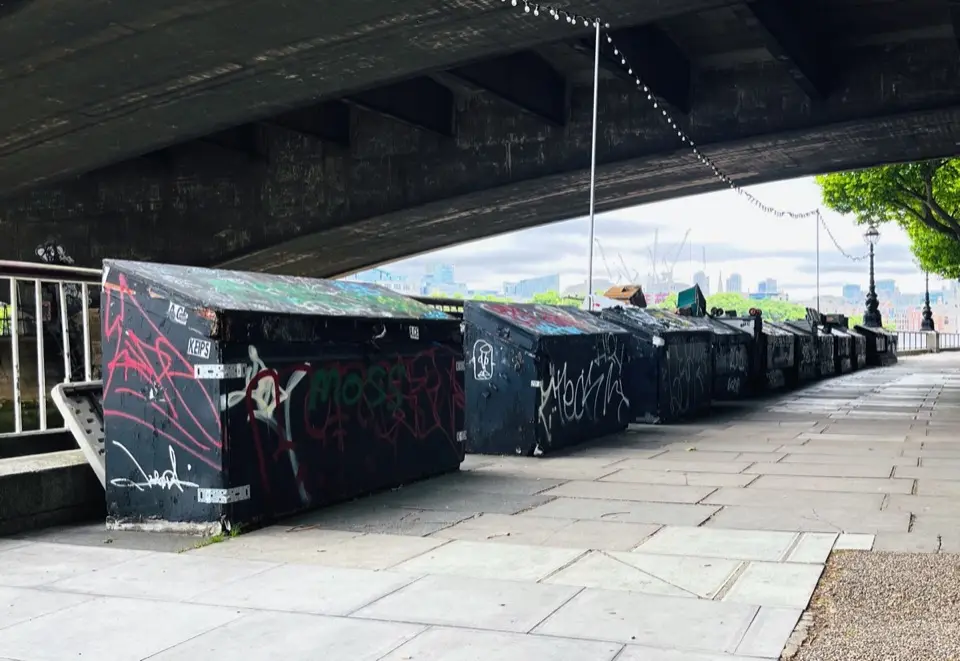
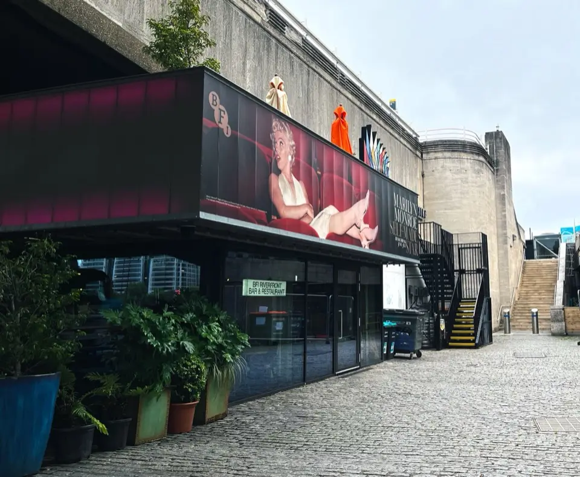
- 4 National Theatre
Denys Lasdun’s concrete terraces, from 1976. Loved and hated in about equal measure.
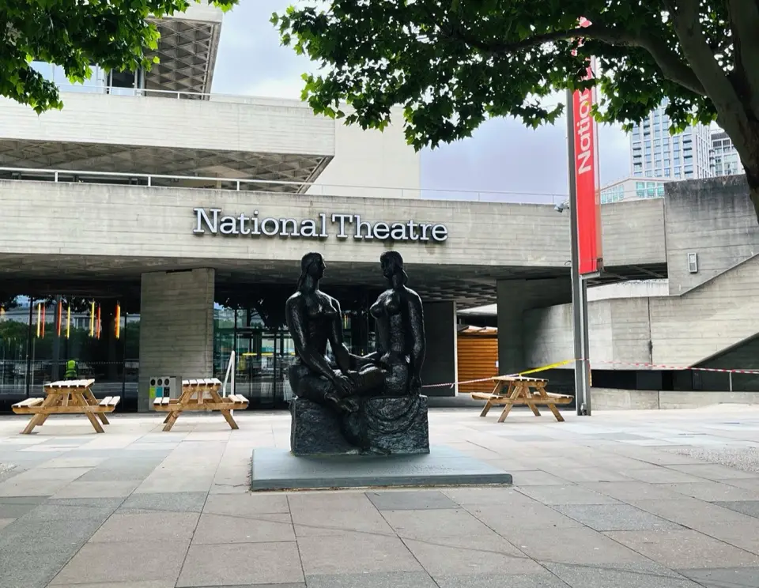
- 5 Gabriel’s Wharf
A little cluster of shops and cafés right on the river.
- 6 Oxo Tower Wharf
Look up for the letters O, X, O in the tower’s windows.
- 7 Tate Modern
The old Bankside Power Station, an art gallery since 2000.
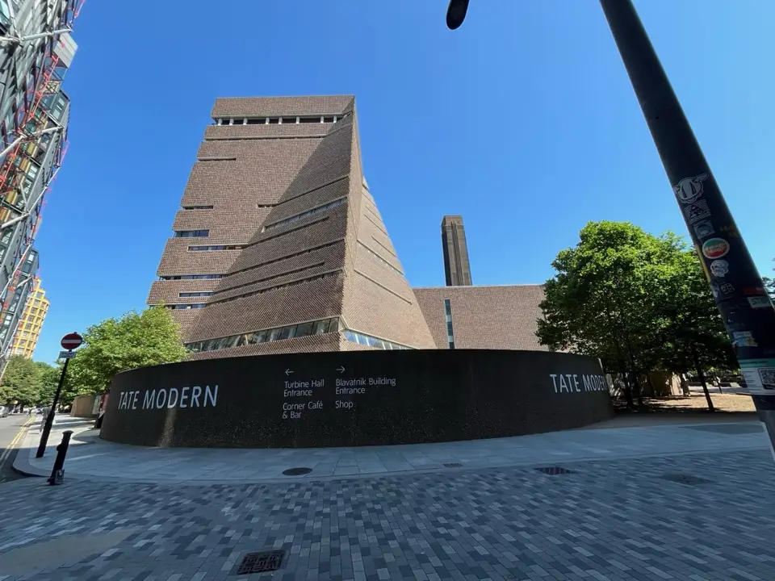
- 8 Millennium Bridge
The footbridge, with St Paul’s Cathedral straight across. It wobbled when it opened in 2000.
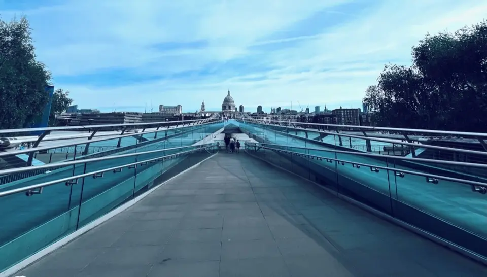
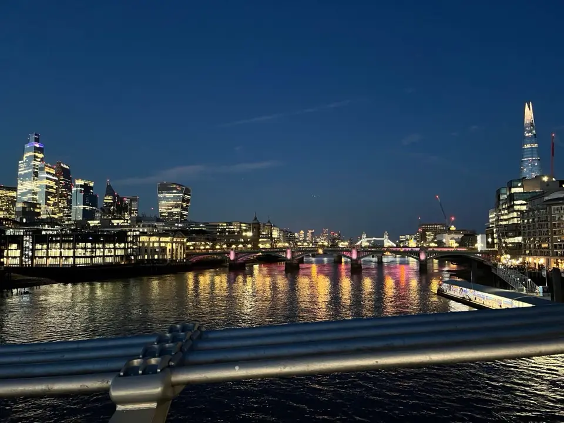
- 9 Shakespeare’s Globe
A reconstruction of Shakespeare’s theater, open since 1997, a short walk from where the original stood.
- 10 Golden Hinde
A full-size replica of Sir Francis Drake’s ship, tucked into its own little dock.
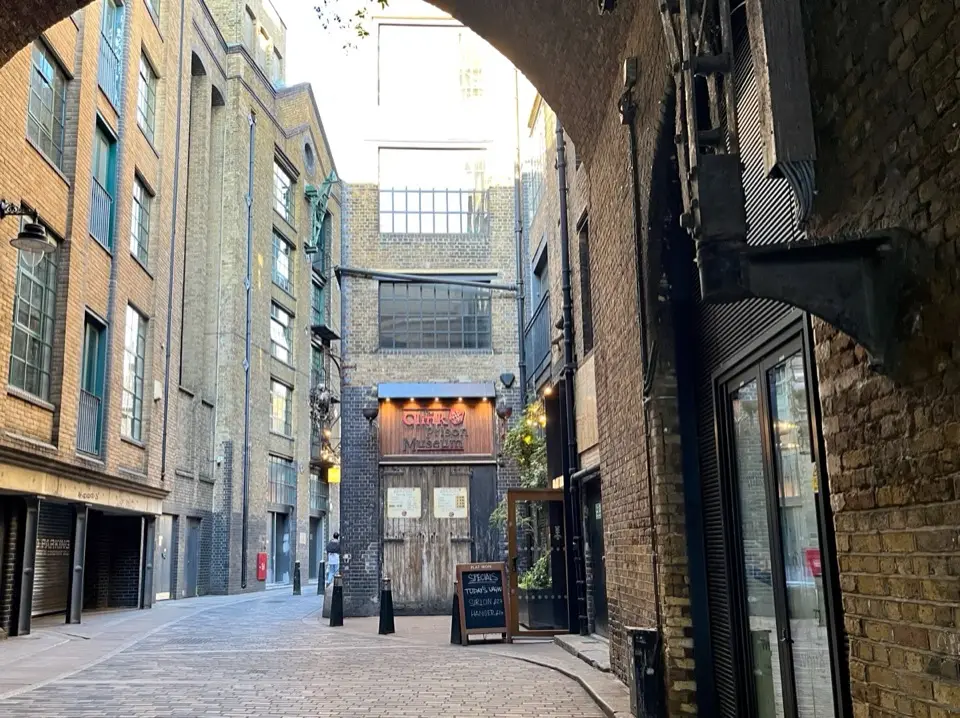
- 11 Southwark Cathedral
One of the oldest churches in London, right next to the market.
- 12 Borough Market
One of London’s oldest food markets. Come hungry.
- 13 HMS Belfast
A Second World War cruiser, moored for good as a museum.
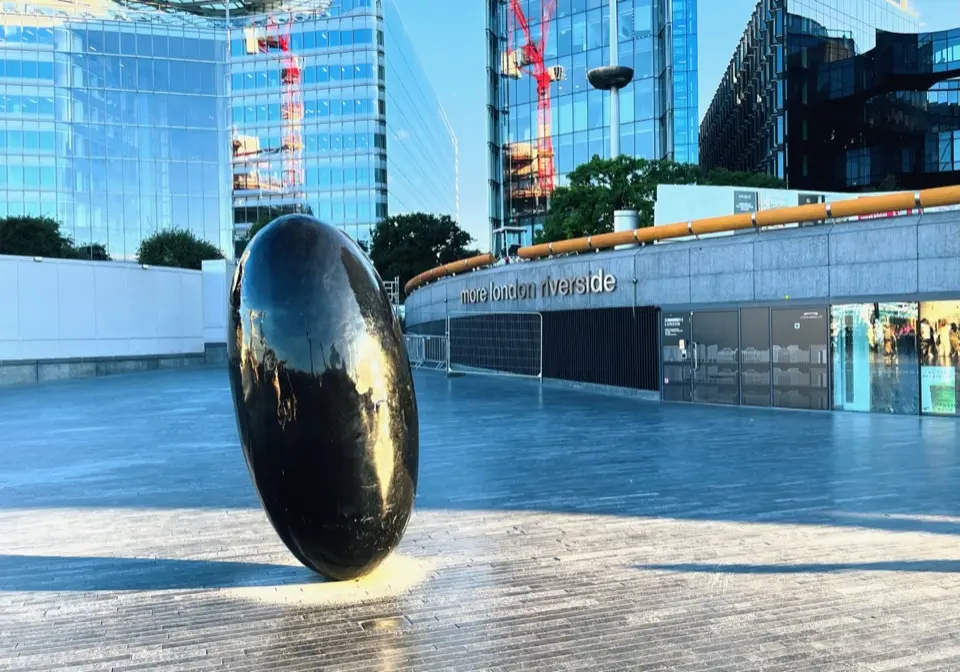
- 14 Tower Bridge
The one everyone pictures. Walk across, or just stand and look.
- 15 Shad Thames
Old warehouses, cobbles, and walkways overhead. The Design Museum was here until 2016.
Across Tower Bridge, and back along the north bank
- 16 Tower of London
Nearly a thousand years old, and a fortress, a palace, and a prison in its time. The Crown Jewels are kept here.
- 17 The Monument
Christopher Wren’s column to the Great Fire of 1666. It is 61 meters tall, and stands 61 meters from where the fire started.
- 18 St Paul’s Cathedral
Wren again, finished in 1710. Up Peter’s Hill from the river, the dome fills the end of the street.
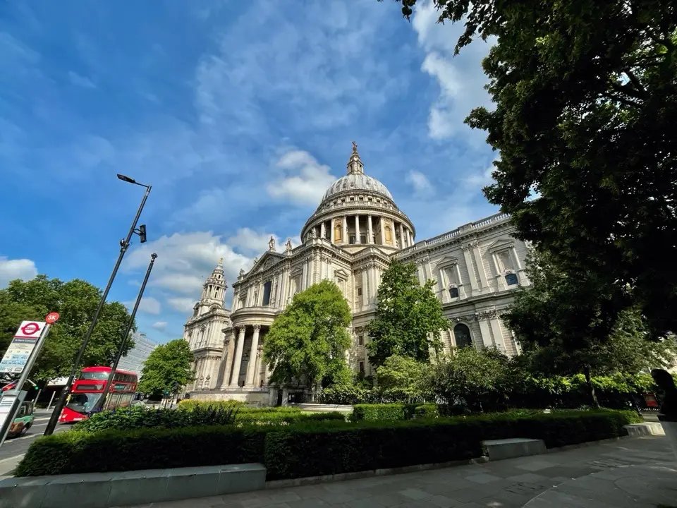
- 19 Somerset House
A palace of government offices from the 1770s, around a courtyard that becomes an ice rink in winter.
- 20 Cleopatra’s Needle
An Egyptian obelisk about 3,500 years old, on the Embankment since 1878. It has nothing to do with Cleopatra.
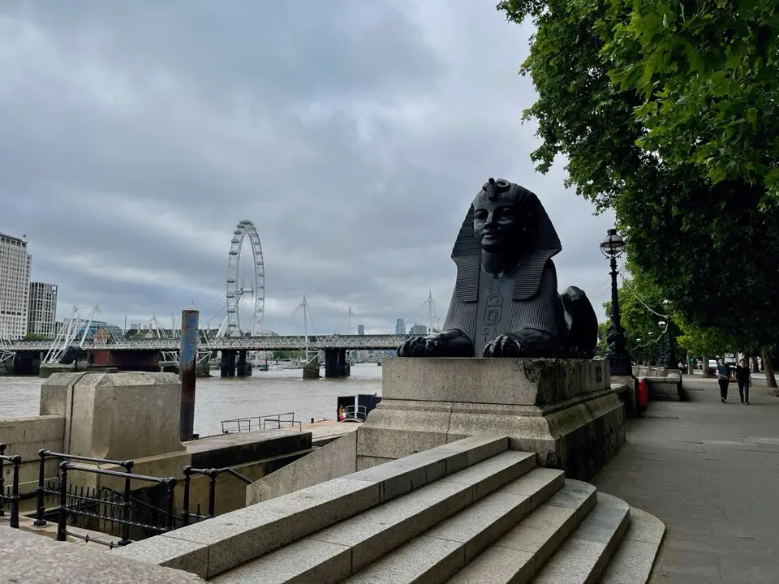
- 21 Big Ben
The clock tower of the Houses of Parliament. Big Ben is the bell; the tower is the Elizabeth Tower. Cross Westminster Bridge here.
- 22 London Eye
A wheel 135 meters tall, turning since 2000. Waterloo Station is a few minutes from here, and the loop is closed.